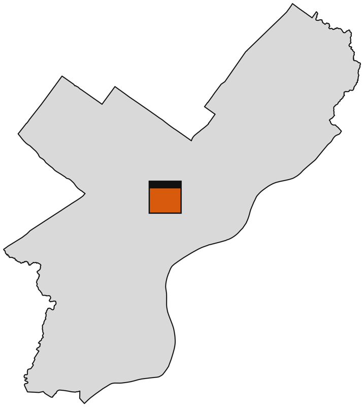
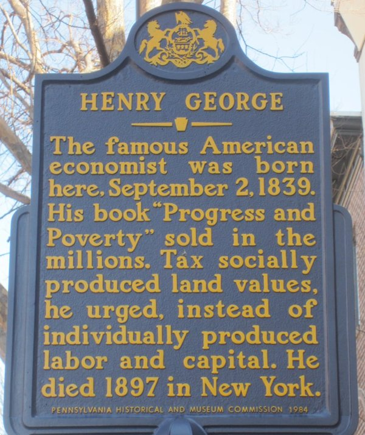

One property tax, two rates
Today one rate, 1.3998% for the City and School District together, covers land and buildings alike. It has not changed since 2016.2,3 A land value tax splits it: land is taxed at 4 times the building rate, and the two rates are set so the City and School District collect exactly what they collect today, $2.42 billion a year.1
Assessments stay the same. What changes is how each property's assessed value is split between land and building, and the rate each part pays. Fixing up a home is taxed at half today's rate.
A rowhouse, and the empty lot next door
| Yearly tax bill | Today | After | Change |
|---|---|---|---|
| Owner's rowhouse | $1,903 | $1,723 | −$180 |
| Same house, rented | $3,303 | $2,991 | −$312 |
| Empty lot, same land | $682 | $1,526 | +$844 |
The typical home: $49,000 of land and $187,000 of building (21% land), the medians of 210,208 single-family homes with a Homestead Exemption.1,4 The owner's rowhouse takes the $100,000 Homestead Exemption; the rented one doesn't.5 Both houses save 9%.
The rule of thumb: a property pays less when its land is under about 26% of its value.
The biggest cuts go to poorer and more diverse neighborhoods
Change in homes' total tax bill, by fifths of Philadelphia neighborhoods (census block groups, cut so each fifth holds a fifth of the city's homes). Neighborhood income and race come from the Census Bureau's American Community Survey.6 The poorest fifth are block groups with a median household income under $39,767, the richest over $97,031; the whitest fifth are under 28% non-white, the most non-white over 97%. These are neighborhood averages, not households. Both charts share one scale.
The FHFA column reruns the model with an independent federal estimate of land values: the Federal Housing Finance Agency's land share for each census tract, applied to the single-family houses it covers (96% of them). Condominium units keep the main model's land, because FHFA's shares come from appraisals of houses.7 It points the same way. The gap between the poorest and richest fifths is about half as wide as in the main model. On OPA's current land values, the pattern reverses: the biggest cuts go to richer, whiter neighborhoods.1
Idle land pays more

1,470 taxable acres sit vacant or paved for parking: 21,733 taxable vacant lots and surface parking lots (1,145 acres of vacant land and 326 of parking) that together would fill a square 1.5 miles on a side.8,4 A typical such lot would see its tax bill double, so it starts to pay to build, or to sell to someone who will.1
Building-heavy property pays less and land-heavy property pays more: 66% of homes and about half of apartment buildings pay less, while most commercial properties pay more, nearly 9 in 10 warehouses and gas stations among them.1
Some homeowners pay more too. Of homes with a Homestead Exemption, 66% pay less (median saving $277) and 34% pay more (median $450), mostly where land is a big share of value. The Longtime Owner Occupants Program9 and the Senior Citizen Tax Freeze10 continue.
How Philadelphia gets there
Build public understanding
Poll Philadelphians and test how best to explain the shift. Give every owner a way to look up their own property. Publish accurate land values years before any rate changes, so owners see their land and building figures move while their bills don't. Land taxes have been lost this way before. Pittsburgh repealed its split rate in the backlash to a 2001 reassessment,11 and Altoona's council dropped its land tax in 2016 partly because it “caused confusion.”12
-
1City Council, now
Fix land assessments
Require the Office of Property Assessment to value land accurately, tested against sales; this page's figures use a first version of such values. No state permission is needed, and every figure on this page depends on it.
-
2State, in parallel
Pass enabling legislation
State law lets third-class cities and boroughs tax land above buildings, but not Philadelphia.13,14 The bill must also fit the Homestead Exemption and other long-running relief to two rates: under today's homestead rule, which takes it off the building first, 64% of exempt homeowners would pay more; with the fix, 34%.15,1
-
3City Council, then
Pass the land value tax
Shift the rate from buildings to land, revenue-neutral, phased in over 10 years, once land is valued accurately and the city has clear state authority.
Pennsylvania has done this for a century
The 10-year abatement is honored
Philadelphia's 10-year abatements take new construction and improvements off the tax bill for a decade.22 Under this plan no abatement ends early. While one runs, its owner pays more on the land. Of the 20,233 abated properties, 31% never pay more overall; 45% pay more for a time and are made whole after the abatement ends; 24% pay more for good. Once it ends, 76% pay less than under today's tax, a median $777 a year. The last abatement expires in 2036.1
This is the same reform phased in over 10 years from tax year 2027, with every abatement running out on its own schedule.
A Philadelphia idea

Land gets its value from all of us: the transit, schools, jobs and neighbors around it. A building gets its value from the people who build it and keep it up.
Henry George, who made that case, was born at 413 S. 10th St. in 1839. The state marker outside reads:23
Tax socially produced land values, he urged, instead of individually produced labor and capital.
Who else backs it
Pittsburgh Post-Gazette editorial board
“Pittsburgh should return to its roots in land value taxation,” in the headline of a December 2025 editorial.24
Joe Gyourko, Wharton
“We should tax land much more than structure,” with a careful, lengthy phase-in. Brookings, 2026.25
ATU Local 689, Metro DC's transit union
Proposed a land value tax around Metro stations to fund transit, in a 2025 report.26
Chicago DSA
A plank of its platform: “Protecting Homeowners by Taxing Land, Not Property.”27
How the numbers are made
Every figure on this page is a modeled estimate for tax year 2026, not a tax bill. They come from PPI's Philadelphia model, built on LVTShift, an open-source toolkit that recomputes the bill for every taxable parcel in the city.28 Every figure on this page is published with it as data.1
- The records
- The Office of Property Assessment's tax year 2026 roll: one row per parcel, with its taxable land and building, property type, lot size and Homestead Exemption.4 "Homes" are taxable 1–4-unit residential parcels with a tax bill today (482,976 of them). Owner-occupied homes, those with a Homestead Exemption or an individual owner whose mailing address is the home, pay less about as often as homes overall (66% of them), but as a group they pay about the same as today (−0.8%): the increases on land-heavy homes offset the majority's savings.1
- Land values from land sales
- OPA's land values sit close to a fixed share of each property's value. The model replaces them with PPI's own estimates from 3,666 Philadelphia land sales since 2020: lots sold vacant, whether still empty or built on since, and teardowns. Each lot takes the weighted median price per square foot of its ten nearest such sales, each adjusted to the lot's size and to the valuation date; the size adjustment is measured from pairs of nearby sales. On lots larger than 10,000 square feet, which few land sales test, the estimate runs high, so it is scaled down by how far it overshoots the sales of such lots, by lot size. Bare tracts with a restricted use, such as rail corridors and port terminals, keep OPA's value (see the largest lots, below).1
- Assessments stay put
- For a parcel with a building, land becomes the sales-based estimate (capped at the parcel's total) and the building is the rest. The total assessment does not move, so nobody's assessment goes up; 100% of the 515,731 built parcels keep exactly today's total. Bare lots, having no building to hold a total against, are valued at their land estimate (30,583 of them).
- Revenue-neutral rates
- With land taxed at 4 times the building rate, the building rate is the one that raises today's revenue:
building rate = revenue ÷ (4 × taxable land + taxable building)
and the land rate is 4 times that: 3.13% and 0.78%. - Other long-running relief
- Some properties carry other relief that OPA records as an exemption. It has run since 2015 or earlier and rises with each reassessment, so it is not a construction abatement, and OPA's data does not name its program. How it should divide between land and building under two rates is not set by law. These figures keep it and take it off land and building in proportion to value, like the homestead.1
- The Homestead Exemption
- At one rate it does not matter which part of a home the $100,000 exemption comes off. Under two rates it does. State law takes it off the building first,15 which would cut the median homeowner's exemption from $1,400 a year to $742, about half. This page's figures take it off land and building in proportion to their value, which keeps most of its worth ($1,252) and needs § 8583(c) amended.1
- After today's abatements
- The figures describe the city after today's 10-year abatements have run out, with each abated building back on the roll. The transition while they run is modeled year by year in the abatement section.
- The largest lots
- The land sales are mostly small lots, so for lots larger than 10,000 square feet the estimate is an extrapolation, and on the sales of such lots that exist it runs high: about 1.17 times the price up to an acre and 1.88 times above. The figures here divide it by that. In these figures homes' total saving is $38 million a year, and most of it goes to homes that are not owner-occupied, mostly rented: they save $30 million (4.9%). Owner-occupied homes as a group pay about the same as today (−0.8%), though 66% of them pay less. Other defensible readings of the largest lots move homes' total saving from $31 million to $67 million. The share of homes paying less barely moves. The table varies only the 1,653 bare lots larger than 10,000 square feet.
| Largest bare lots valued at | Land rate | Building rate | Homes, all together | Vacant land |
|---|---|---|---|---|
| The sales-based estimate, scaled to the sales (the headline) | 3.13% | 0.78% | −$38 million | +126% |
| OPA's value | 3.13% | 0.78% | −$36 million | +122% |
| OPA's value, re-leveled to sales | 3.13% | 0.78% | −$39 million | +128% |
| The sales-based estimate, unscaled | 3.07% | 0.77% | −$70 million | +208% |
The printed briefing
Two pages, letter size. Download the PDF.
Sources
- PPI's Philadelphia model: every figure on this page, as data (numbers.json). numbers.json
- City of Philadelphia, Real Estate Tax. phila.gov/services/payments-assistance-taxes/taxes/proper…
- City of Philadelphia, Learn how to lower your property tax bill ahead of the 2027 valuations, July 20, 2026: the rate has not changed since 2016. phila.gov/2026-07-20-learn-how-to-lower-your-property-tax…
- City of Philadelphia, Office of Property Assessment, property and assessment data (OpenDataPhilly). opendataphilly.org/datasets/philadelphia-properties-and-a…
- City of Philadelphia, Get the Homestead Exemption. phila.gov/services/payments-assistance-taxes/taxes/proper…
- U.S. Census Bureau, American Community Survey 5-year estimates, 2018–2022, block groups: median household income (B19013) and race and Hispanic origin (B03002). census.gov/data/developers/data-sets/acs-5year.html
- Davis, Larson, Oliner and Shui, The Price of Residential Land for Counties, ZIP Codes, and Census Tracts in the United States, FHFA Working Paper 19-01. fhfa.gov/research/papers/wp1901
- City of Philadelphia, Vacant Property Indicators (OpenDataPhilly). opendataphilly.org/datasets/vacant-property-indicators/
- City of Philadelphia, Longtime Owner Occupants Program (LOOP). phila.gov/services/payments-assistance-taxes/payment-plan…
- City of Philadelphia, Low-Income Senior Citizen Real Estate Tax Freeze. phila.gov/services/payments-assistance-taxes/payment-plan…
- Governing, Leaning on the land: Pittsburgh's repeal after its 2001 reassessment. governing.com/archive/gov-land-tax.html
- Altoona Mirror, City council decides to cut land value tax, June 6, 2016. altoonamirror.com/news/local-news/2016/06/city-council-de…
- 11 Pa.C.S. § 12531(c)(3), Third Class City Code: separate rates on land and buildings. legis.state.pa.us/WU01/LI/LI/CT/HTM/11/11.HTM
- 8 Pa.C.S. § 1302.1, Borough Code: separate rates on land and buildings. legis.state.pa.us/WU01/LI/LI/CT/HTM/08/08.HTM
- 53 Pa.C.S. § 8583, homestead exclusion; subsection (c) covers split rates. legis.state.pa.us/WU01/LI/LI/CT/HTM/53/00.085.083.000..HTM
- Progress and Poverty Institute, What happened when Pennsylvania taxed land. progressandpovertyinstitute.org/wp-content/uploads/What-h…
- Yang and Hawley, Split-rate taxation: impacts on tax base, Lincoln Institute of Land Policy working paper, 2021 (Table 1: Pennsylvania split-rate municipalities and years). lincolninst.edu/app/uploads/legacy-files/pubfiles/yang_wp…
- Dauphin County, 2026 millage rates: City of Harrisburg, separate land and building rates. dauphincounty.gov/docs/default-source/tax-assessments/202…
- City of Allentown, 2026 final budget narrative, p. 44: the bifurcated rate. allentownpa.gov/Portals/0/files/Departments/Finance/Budge…
- Bourassa, Land value taxation and new housing development in Pittsburgh, Growth and Change, 1987: a 5% cut in the building tax rate, about 14% more new units. doi.org/10.1111/j.1468-2257.1987.tb00087.x
- Yang, The effects of the two-rate property tax: what can we learn from the Pennsylvania experience?, Lincoln Institute of Land Policy working paper, 2014. lincolninst.edu/publications/working-papers/effects-two-r…
- City of Philadelphia, Get a property tax abatement. phila.gov/services/payments-assistance-taxes/taxes/proper…
- Henry George historical marker, 413 S. 10th St., erected by the Pennsylvania Historical and Museum Commission in 1984 (photograph and text, Wikimedia Commons). commons.wikimedia.org/wiki/File:Henry_George_Historical_M…
- Pittsburgh Post-Gazette editorial board, Big Idea: Pittsburgh should return to its roots in land value taxation, Dec. 21, 2025. post-gazette.com/opinion/editorials/2025/12/21/land-value…
- Joseph Gyourko, Thinking about the growing housing affordability problem, Brookings, Mar. 18, 2026. brookings.edu/articles/thinking-about-the-growing-housing…
- ATU Local 689, Recycling Transit Created Land Values: a land value tax around Metro stations (2025). atulocal689.org/s/LVT-Report-1.pdf
- Chicago Democratic Socialists of America, platform: Protecting Homeowners by Taxing Land, Not Property. chicagodsa.org/cdsa-platform/
- LVTShift, the open-source parcel-level property tax toolkit PPI's model is built on. github.com/drussellmrichie/LVTShift
.jpg){kind=link}